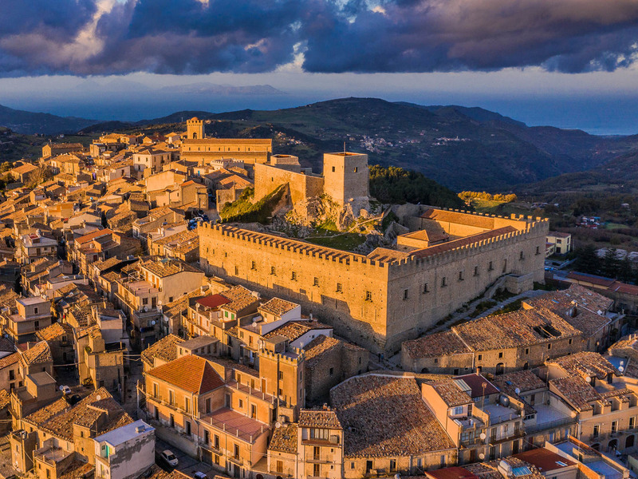
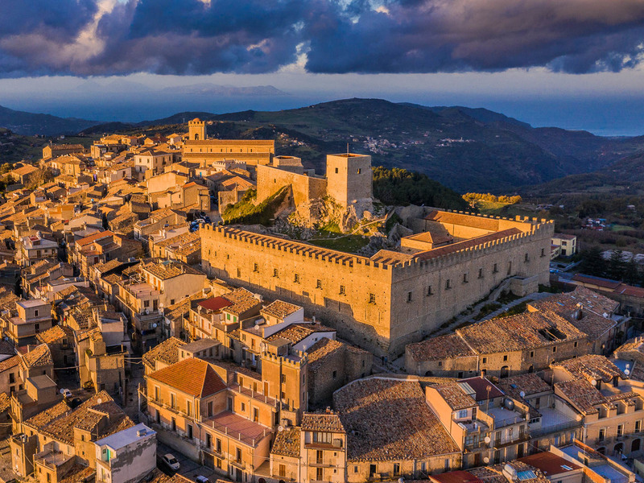

Welkom in de Toscane
Over Toscane en Lugo

Over Toscane en Bari

Over Toscane en Lugo
Lugo is een dorpje dat te koop is, dus urban hunt is iets dat je hier goed kunt uitoefenen. Bari is een vissersdorpje.
 
